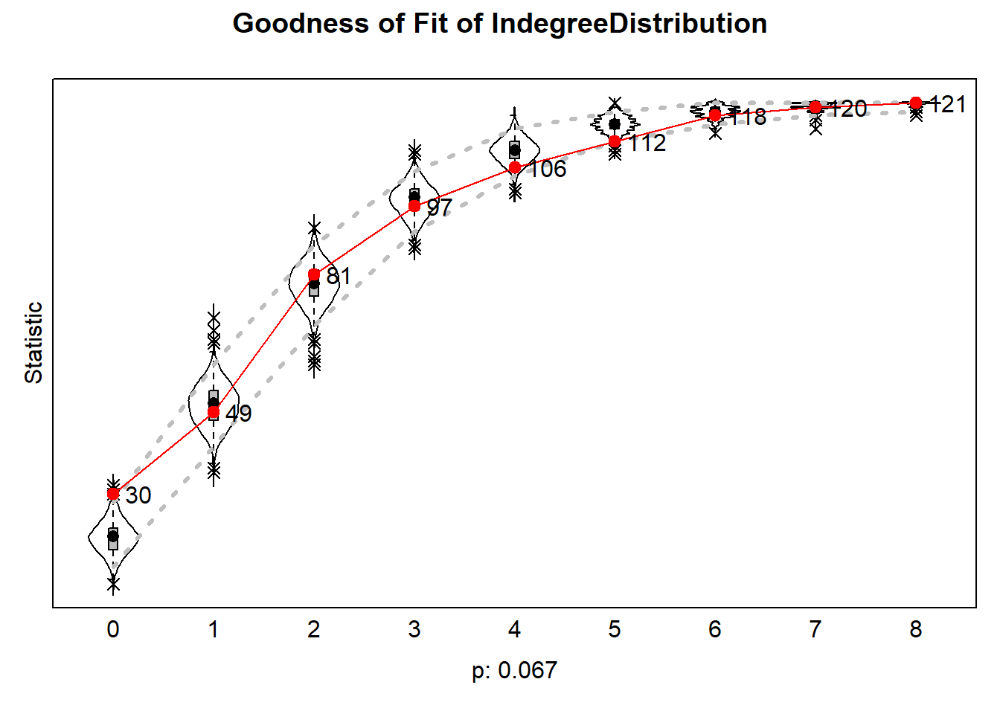
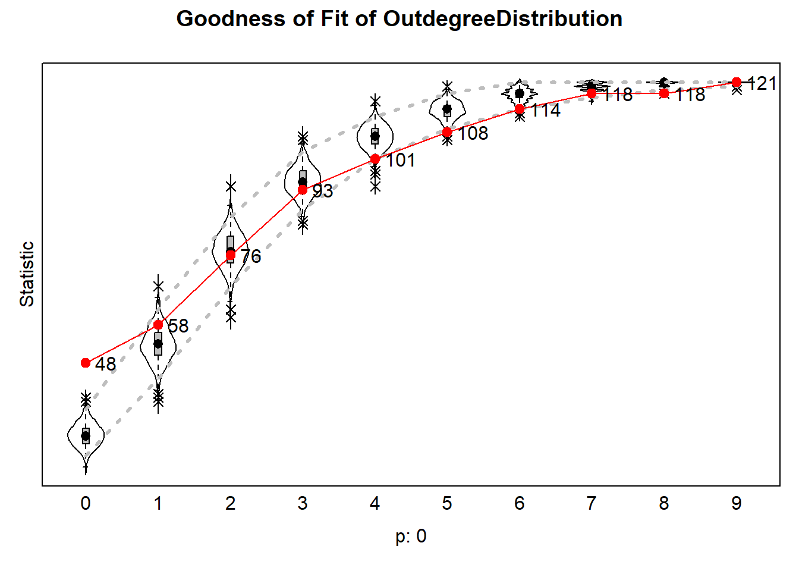
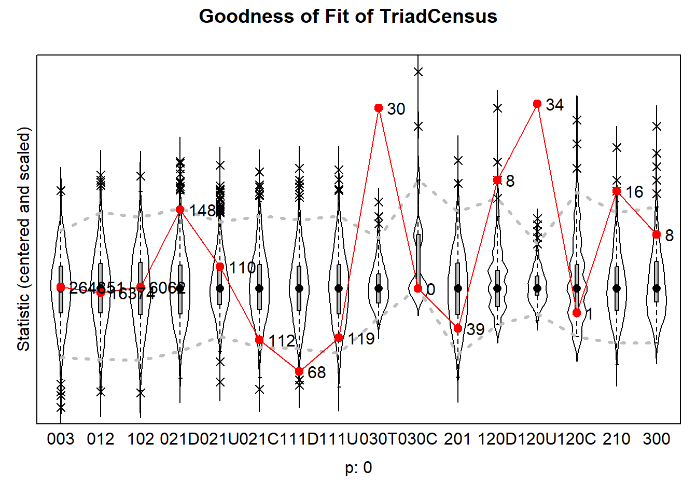
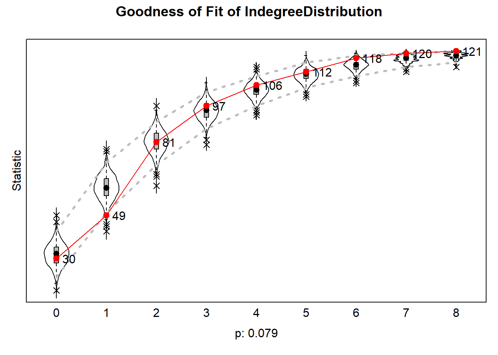
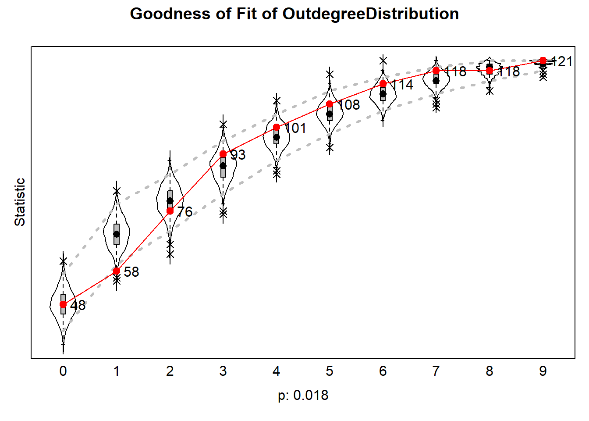
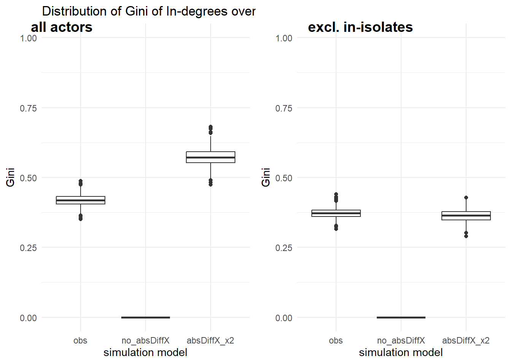

Code final assignment
Lauren
2026-09-25
This webpage combines all relevant code from all the weeks that I used for my final assignment, so it is all easily findable in one place, rather than scattered around in all pages for every separate week.
1 Preparation
Necessary packages
library(ape)
library(sna)
library(knitr)
library(styler)
library(tidyverse)
library(installr)
library(foreign)
library(network)
library(RSiena)
library(RsienaTwoStep)
library(igraph)
library(devtools)
library(corrplot)
library(ltm)
library(psych)Load in data
rm(list = ls())
load("./data/IndividualCharacteristics.RData")
load("./data/NetworkCharacteristics.RData")
load("./data/CivicAttitudes.RData")2 Create network matrices
# view(hanging[[1]])
hanging_df_t1 <- as.data.frame(hanging[[1]][1])
class(hanging_df_t1)## [1] "data.frame"# view(hanging_df_t1)
strong_netw_t1 <- data.matrix(hanging_df_t1)
strong_netw_t1[strong_netw_t1==9]<-NA
class(strong_netw_t1)## [1] "matrix" "array"# view(strong_netw_t1)
hanging_df_t2 <- as.data.frame(hanging[[1]][2])
class(hanging_df_t2)## [1] "data.frame"# view(hanging_df_t2)
strong_netw_t2 <- data.matrix(hanging_df_t2)
strong_netw_t2[strong_netw_t2==9]<-NA
class(strong_netw_t2)## [1] "matrix" "array"# view(strong_netw_t2)3 Create civic engagement attitudes
3.1 Wave 1
3.1.1 Factor analysis
IC_df <- as.data.frame(T1civeng[[1]])
# view(IC_df)
# Sample size = 121 (has to be > 300)
psych::KMO(IC_df) ## Kaiser-Meyer-Olkin factor adequacy
## Call: psych::KMO(r = IC_df)
## Overall MSA = 0.77
## MSA for each item =
## T1CIVICENG1 T1CIVICENG2 T1CIVICENG3 T1CIVICENG4
## 0.83 0.72 0.73 0.85# KMO = .77 (has to be > .5)
det(cor(IC_df, use = "complete.obs")) ## [1] 0.1928592# Determinant = 0.1928592 (> 0.00001)
ltm:: rcor.test(IC_df, use = "complete.obs")##
## T1CIVICENG1 T1CIVICENG2 T1CIVICENG3 T1CIVICENG4
## T1CIVICENG1 ***** 0.612 0.548 0.333
## T1CIVICENG2 <0.001 ***** 0.738 0.474
## T1CIVICENG3 <0.001 <0.001 ***** 0.534
## T1CIVICENG4 <0.001 <0.001 <0.001 *****
##
## upper diagonal part contains correlation coefficient estimates
## lower diagonal part contains corresponding p-values# Only positive correlations (as it should be)
corrplot(cor(IC_df, use="complete.obs"), tl.col='black', tl.cex=.75) 
Factors_w1 <- fa(IC_df, nfactors = 4, rotate = "none", fm = "minres")
Factors_w1## Factor Analysis using method = minres
## Call: fa(r = IC_df, nfactors = 4, rotate = "none", fm = "minres")
## Standardized loadings (pattern matrix) based upon correlation matrix
## MR1 MR2 MR3 MR4 h2 u2 com
## T1CIVICENG1 0.67 -0.23 0.05 0 0.50 0.50 1.2
## T1CIVICENG2 0.87 -0.13 -0.03 0 0.78 0.22 1.0
## T1CIVICENG3 0.86 0.13 -0.04 0 0.76 0.24 1.0
## T1CIVICENG4 0.58 0.26 0.05 0 0.41 0.59 1.4
##
## MR1 MR2 MR3 MR4
## SS loadings 2.30 0.15 0.01 0.00
## Proportion Var 0.57 0.04 0.00 0.00
## Cumulative Var 0.57 0.61 0.61 0.61
## Proportion Explained 0.93 0.06 0.00 0.00
## Cumulative Proportion 0.93 1.00 1.00 1.00
##
## Mean item complexity = 1.2
## Test of the hypothesis that 4 factors are sufficient.
##
## df null model = 6 with the objective function = 1.65 with Chi Square = 193.93
## df of the model are -4 and the objective function was 0
##
## The root mean square of the residuals (RMSR) is 0
## The df corrected root mean square of the residuals is NA
##
## The harmonic n.obs is 108 with the empirical chi square 0 with prob < NA
## The total n.obs was 121 with Likelihood Chi Square = 0 with prob < NA
##
## Tucker Lewis Index of factoring reliability = 1.033
## Fit based upon off diagonal values = 1
## Measures of factor score adequacy
## MR1 MR2 MR3 MR4
## Correlation of (regression) scores with factors 0.94 0.51 0.13 0
## Multiple R square of scores with factors 0.89 0.26 0.02 0
## Minimum correlation of possible factor scores 0.78 -0.47 -0.97 -13.1.2 Reliability analysis
reliability <- psych::alpha(IC_df[, c("T1CIVICENG1","T1CIVICENG2","T1CIVICENG3","T1CIVICENG4")])
reliability##
## Reliability analysis
## Call: psych::alpha(x = IC_df[, c("T1CIVICENG1", "T1CIVICENG2", "T1CIVICENG3",
## "T1CIVICENG4")])
##
## raw_alpha std.alpha G6(smc) average_r S/N ase mean sd median_r
## 0.81 0.82 0.8 0.54 4.7 0.029 5 0.94 0.54
##
## 95% confidence boundaries
## lower alpha upper
## Feldt 0.75 0.81 0.86
## Duhachek 0.75 0.81 0.87
##
## Reliability if an item is dropped:
## raw_alpha std.alpha G6(smc) average_r S/N alpha se var.r med.r
## T1CIVICENG1 0.79 0.81 0.76 0.58 4.2 0.034 0.0192 0.53
## T1CIVICENG2 0.72 0.73 0.66 0.47 2.7 0.045 0.0144 0.53
## T1CIVICENG3 0.71 0.73 0.67 0.47 2.7 0.047 0.0194 0.47
## T1CIVICENG4 0.83 0.84 0.79 0.63 5.2 0.027 0.0094 0.61
##
## Item statistics
## n raw.r std.r r.cor r.drop mean sd
## T1CIVICENG1 109 0.77 0.77 0.65 0.57 4.8 1.23
## T1CIVICENG2 108 0.85 0.87 0.84 0.75 5.5 0.99
## T1CIVICENG3 108 0.86 0.87 0.84 0.74 5.2 1.10
## T1CIVICENG4 108 0.75 0.72 0.57 0.51 4.6 1.35
##
## Non missing response frequency for each item
## 1 2 3 4 5 6 7 miss
## T1CIVICENG1 0.02 0.02 0.07 0.29 0.31 0.21 0.07 0.10
## T1CIVICENG2 0.00 0.00 0.02 0.17 0.30 0.38 0.14 0.11
## T1CIVICENG3 0.00 0.00 0.05 0.26 0.32 0.23 0.14 0.11
## T1CIVICENG4 0.00 0.07 0.11 0.28 0.27 0.18 0.09 0.11# Raw alpha = 0.8096448
# All r.drop are > .3
reliability$alpha.drop ## raw_alpha std.alpha G6(smc) average_r S/N alpha se
## T1CIVICENG1 0.7898278 0.8069117 0.7600961 0.5821131 4.178977 0.03376777
## T1CIVICENG2 0.7184678 0.7282161 0.6620457 0.4717746 2.679393 0.04510940
## T1CIVICENG3 0.7085011 0.7291575 0.6677994 0.4729614 2.692182 0.04688714
## T1CIVICENG4 0.8294051 0.8379094 0.7883594 0.6327755 5.169390 0.02734554
## var.r med.r
## T1CIVICENG1 0.019243874 0.5341844
## T1CIVICENG2 0.014446190 0.5341844
## T1CIVICENG3 0.019424805 0.4737106
## T1CIVICENG4 0.009399533 0.6119581# Removing T1CIVICENG4 results in a small increase of the Cronbach's alpha (0.82 instead of 0.81)3.1.3 Make scale
IC_df$missings <- rowSums(is.na(IC_df))
IC_df$ce_t1 <- ifelse(IC_df$missings <= 1, rowMeans(IC_df[,1:4]), NA)
# View(IC_df)3.1.4 Dichotomise
# Civic attitudes are relatively positive, overall. There is no one who scores lower than 3. For the dichotomisation, I have decided to put the cut-off point at a score of 5, as this is the direct middle of the actually observed scores, and it is the mean score.
IC_df$ce_t1_cat <- cut(IC_df$ce_t1,
breaks = c(0, 5, 7),
labels= c('neutral', 'positive'))
table(IC_df$ce_t1, IC_df$ce_t1_cat)##
## neutral positive
## 3 1 0
## 3.25 1 0
## 3.5 6 0
## 3.75 2 0
## 4 7 0
## 4.25 10 0
## 4.5 15 0
## 4.75 13 0
## 5 7 0
## 5.25 0 13
## 5.5 0 5
## 5.75 0 8
## 6 0 6
## 6.25 0 4
## 6.5 0 2
## 6.75 0 2
## 7 0 63.2 Wave 2
3.2.1 Factor analysis
IC_df2 <- as.data.frame(T2civeng[[1]])
#View(IC_df2)
# Sample size = 121 (has to be > 300)
psych::KMO(IC_df2) ## Kaiser-Meyer-Olkin factor adequacy
## Call: psych::KMO(r = IC_df2)
## Overall MSA = 0.81
## MSA for each item =
## T2CIVICENG1 T2CIVICENG2 T2CIVICENG3 T2CIVICENG4
## 0.77 0.77 0.86 0.90# KMO = .81 (has to be > .5)
det(cor(IC_df2, use = "complete.obs")) ## [1] 0.08336661# Determinant = 0.08336661 (> 0.00001)
rcor.test(IC_df2, use = "complete.obs")##
## T2CIVICENG1 T2CIVICENG2 T2CIVICENG3 T2CIVICENG4
## T2CIVICENG1 ***** 0.818 0.718 0.575
## T2CIVICENG2 <0.001 ***** 0.707 0.604
## T2CIVICENG3 <0.001 <0.001 ***** 0.600
## T2CIVICENG4 <0.001 <0.001 <0.001 *****
##
## upper diagonal part contains correlation coefficient estimates
## lower diagonal part contains corresponding p-values# Only positive correlations (as it should be)
corrplot(cor(IC_df2, use="complete.obs"), tl.col='black', tl.cex=.75) 
Factors_w2 <- fa(IC_df2, nfactors = 4, rotate = "none", fm = "minres")
Factors_w2## Factor Analysis using method = minres
## Call: fa(r = IC_df2, nfactors = 4, rotate = "none", fm = "minres")
## Standardized loadings (pattern matrix) based upon correlation matrix
## MR1 MR2 MR3 MR4 h2 u2 com
## T2CIVICENG1 0.90 -0.19 -0.06 0 0.84 0.16 1.1
## T2CIVICENG2 0.90 -0.12 0.11 0 0.83 0.17 1.1
## T2CIVICENG3 0.82 0.13 -0.11 0 0.71 0.29 1.1
## T2CIVICENG4 0.70 0.24 0.07 0 0.55 0.45 1.3
##
## MR1 MR2 MR3 MR4
## SS loadings 2.77 0.13 0.03 0.00
## Proportion Var 0.69 0.03 0.01 0.00
## Cumulative Var 0.69 0.72 0.73 0.73
## Proportion Explained 0.94 0.04 0.01 0.00
## Cumulative Proportion 0.94 0.99 1.00 1.00
##
## Mean item complexity = 1.1
## Test of the hypothesis that 4 factors are sufficient.
##
## df null model = 6 with the objective function = 2.48 with Chi Square = 292.76
## df of the model are -4 and the objective function was 0
##
## The root mean square of the residuals (RMSR) is 0
## The df corrected root mean square of the residuals is NA
##
## The harmonic n.obs is 105 with the empirical chi square 0 with prob < NA
## The total n.obs was 121 with Likelihood Chi Square = 0 with prob < NA
##
## Tucker Lewis Index of factoring reliability = 1.021
## Fit based upon off diagonal values = 1
## Measures of factor score adequacy
## MR1 MR2 MR3 MR4
## Correlation of (regression) scores with factors 0.96 0.56 0.37 0
## Multiple R square of scores with factors 0.93 0.31 0.13 0
## Minimum correlation of possible factor scores 0.85 -0.38 -0.73 -13.2.2 Reliability analysis
reliability2 <- psych::alpha(IC_df2[, c("T2CIVICENG1","T2CIVICENG2","T2CIVICENG3","T2CIVICENG4")])
reliability2##
## Reliability analysis
## Call: psych::alpha(x = IC_df2[, c("T2CIVICENG1", "T2CIVICENG2", "T2CIVICENG3",
## "T2CIVICENG4")])
##
## raw_alpha std.alpha G6(smc) average_r S/N ase mean sd median_r
## 0.88 0.89 0.87 0.67 8.1 0.017 5.1 0.99 0.66
##
## 95% confidence boundaries
## lower alpha upper
## Feldt 0.85 0.88 0.92
## Duhachek 0.85 0.88 0.92
##
## Reliability if an item is dropped:
## raw_alpha std.alpha G6(smc) average_r S/N alpha se var.r med.r
## T2CIVICENG1 0.83 0.84 0.78 0.64 5.3 0.026 0.0037 0.60
## T2CIVICENG2 0.83 0.84 0.78 0.63 5.1 0.027 0.0058 0.60
## T2CIVICENG3 0.85 0.86 0.82 0.67 6.0 0.025 0.0176 0.60
## T2CIVICENG4 0.90 0.90 0.86 0.75 8.9 0.016 0.0037 0.72
##
## Item statistics
## n raw.r std.r r.cor r.drop mean sd
## T2CIVICENG1 105 0.90 0.90 0.87 0.80 4.9 1.2
## T2CIVICENG2 105 0.89 0.90 0.88 0.82 5.4 1.0
## T2CIVICENG3 105 0.87 0.87 0.81 0.76 5.2 1.1
## T2CIVICENG4 105 0.81 0.80 0.68 0.65 4.8 1.3
##
## Non missing response frequency for each item
## 1 2 3 4 5 6 7 miss
## T2CIVICENG1 0.01 0.03 0.08 0.24 0.31 0.26 0.08 0.13
## T2CIVICENG2 0.00 0.00 0.04 0.15 0.32 0.36 0.12 0.13
## T2CIVICENG3 0.00 0.01 0.02 0.30 0.26 0.32 0.10 0.13
## T2CIVICENG4 0.01 0.02 0.13 0.21 0.29 0.28 0.07 0.13# Raw alpha = 0.8848902
# All r.drop are > .3
reliability2$alpha.drop ## raw_alpha std.alpha G6(smc) average_r S/N alpha se
## T2CIVICENG1 0.8327506 0.8404272 0.7834358 0.6370996 5.266730 0.02635169
## T2CIVICENG2 0.8322631 0.8370127 0.7819057 0.6312434 5.135448 0.02660464
## T2CIVICENG3 0.8476004 0.8566874 0.8227534 0.6658407 5.977754 0.02465003
## T2CIVICENG4 0.8957759 0.8989641 0.8619178 0.7478456 8.897474 0.01604395
## var.r med.r
## T2CIVICENG1 0.003694115 0.6040620
## T2CIVICENG2 0.005832812 0.5999946
## T2CIVICENG3 0.017571187 0.6040620
## T2CIVICENG4 0.003722723 0.7182852# Removing T1CIVICENG4 results in a small increase of the Cronbach's alpha (0.88 instead of 0.90)3.2.3 Make scale
IC_df2$missings <- rowSums(is.na(IC_df2))
IC_df2$ce_t2 <- ifelse(IC_df2$missings <= 1, rowMeans(IC_df2[,1:4]), NA)
# View(IC_df2)3.2.4 Dichotomise
To use the scales for civic attitudes to calculate Moran’s I, and to make plots showing different attitudes, the variable needs to be dichotomised.
# Civic attitudes are relatively positive, overall. There is no one who scores lower than 3. For the dichotomisation, I have decided to put the cut-off point at a score of 5, as this is the direct middle of the actually observed scores, and it is the mean score.
IC_df2$ce_t2_cat <- cut(IC_df2$ce_t2,
breaks = c(0, 5, 7),
labels= c('neutral', 'positive'))
table(IC_df2$ce_t2, IC_df2$ce_t2_cat)##
## neutral positive
## 2.25 1 0
## 3 1 0
## 3.25 1 0
## 3.5 3 0
## 3.75 4 0
## 4 11 0
## 4.25 8 0
## 4.5 8 0
## 4.75 7 0
## 5 11 0
## 5.25 0 10
## 5.5 0 9
## 5.75 0 3
## 6 0 17
## 6.25 0 2
## 6.5 0 2
## 7 0 74 Create gender
5 Descriptive statistics
5.1 Density
# Wave 1
netw1 <- as.network(strong_netw_t1)
network.density(netw1)## [1] 0.02720386# 0.02720386
# Wave 2
netw2 <- as.network(strong_netw_t2)
network.density(netw2)## [1] 0.01859504# 0.018595045.2 Reciprocity
#Wave 1
hangingw1_nona <- na_if(hanging[[1]][[1]], 9)
rowhangingw1 <- rowSums(is.na(hangingw1_nona)) == nrow(hangingw1_nona)
colhangingw1 <- colSums(is.na(hangingw1_nona)) == ncol(hangingw1_nona)
hangingw1_nona[which(rowhangingw1) , ] <- 0
g_strong_t1 <- igraph:: graph_from_adjacency_matrix(hangingw1_nona, mode = "directed")
reciprocity(g_strong_t1, ignore.loops = TRUE, mode = c("default", "ratio"))## [1] 0.4708861# 0.4708861
# Wave 2
hangingw2_nona <- na_if(hanging[[1]][[2]], 9)
rowhangingw2 <- rowSums(is.na(hangingw2_nona)) == nrow(hangingw2_nona)
colhangingw2 <- colSums(is.na(hangingw2_nona)) == ncol(hangingw2_nona)
hangingw2_nona[which(rowhangingw2) , ] <- 0
g_strong_t2 <- igraph:: graph_from_adjacency_matrix(hangingw2_nona, mode = "directed")
reciprocity(g_strong_t2, ignore.loops = TRUE, mode = c("default", "ratio"))## [1] 0.4444444# 0.44444445.3 Dyad configurations
# Wave 1
dyad_census(g_strong_t1)## $mut
## [1] 93
##
## $asym
## [1] 209
##
## $null
## [1] 6958# Mutual ties: 93
# Asymmetrical ties: 209
# No tie: 6958
# Wave 2
dyad_census(g_strong_t2)## $mut
## [1] 60
##
## $asym
## [1] 150
##
## $null
## [1] 7050# Mutual ties: 60
# Asymmetrical ties: 150
# No tie: 70505.4 Triad configurations
# Wave 1
triad_census(g_strong_t1)## [1] 253808 22549 10101 235 243 219 247 254 61 2
## [11] 80 40 54 2 46 39# 003 = 253808
# 012 = 22549
# 102 = 10101
# 021D = 235
# 021U = 243
# 021C = 219
# 111D = 247
# 111U = 254
# 030T = 61
# 030C = 2
# 201 = 80
# 120D = 40
# 120U = 54
# 120C = 2
# 210 = 46
# 300 = 39
# Wave 2
triad_census(g_strong_t2)## [1] 263853 16659 6713 133 125 123 88 132 30 0
## [11] 46 9 39 2 19 9# 003 = 263853
# 012 = 16659
# 102 = 6713
# 021D = 133
# 021U = 125
# 021C = 123
# 111D = 88
# 111U = 132
# 030T = 30
# 030C = 0
# 201 = 46
# 120D = 9
# 120U = 39
# 120C = 2
# 210 = 19
# 300 = 95.5 Transitivity
# Wave 1
transitivity(g_strong_t1)## [1] 0.3641791# 0.3641791
# Wave 2
transitivity(g_strong_t2)## [1] 0.3336766# 0.33367665.6 Path length
# Wave 1
print(mean_dis <- mean_distance(g_strong_t1))## [1] 4.840779mean((ego_size(g_strong_t1, order = mean_dis, mode = "out") - 1)/vcount(g_strong_t1))## [1] 0.2180862# 0.2180862
print(mean_dis <- mean_distance(g_strong_t2))## [1] 4.591732# Wave 2
mean((ego_size(g_strong_t2, order = 7, mode = "out") - 1)/vcount(g_strong_t2))## [1] 0.1705485# 0.17054855.7 Segregation
I calculated Moran’s I with row standardisation, because I assume that each node is influenced equally by its neighbourhood, as there is no theoretical reason to assume otherwise specifically for civic attitudes.
# Wave 1
geodistances <- geodist(netw1, count.paths = TRUE)
geodistances <- geodistances$gdist
weights1 <- geodistances == 1 #Means that only direct ties are taken into account for segregation
ape::Moran.I(IC_df$ce_t1, scaled = FALSE, weight = weights1, na.rm = TRUE)## $observed
## [1] -0.01401314
##
## $expected
## [1] -0.008333333
##
## $sd
## [1] 0.07825407
##
## $p.value
## [1] 0.942139# Moran's I t1: -0.01401314, p-value: 0.942139
# Wave 2
geodistances <- geodist(netw2, count.paths = TRUE)
geodistances <- geodistances$gdist
weights1 <- geodistances == 1 #Means that only direct ties are taken into account for segregation
ape::Moran.I(IC_df2$ce_t2, scaled = FALSE, weight = weights1, na.rm = TRUE)## $observed
## [1] -0.0178618
##
## $expected
## [1] -0.008333333
##
## $sd
## [1] 0.09155827
##
## $p.value
## [1] 0.9171138#Moran's I t2: -0.0178618, p-value: 0.91711386 Data visualisation
6.1 Wave 1
Create an igraph object
copy_strong_netw_t1 <- strong_netw_t1
copy_strong_netw_t1[is.na(copy_strong_netw_t1)] <- 0
g_strong_t1 <- igraph:: graph_from_adjacency_matrix(copy_strong_netw_t1, mode = "directed")6.1.1 Node colours based on civil service attitudes
colour <- ifelse(IC_df$ce_t1_cat=='neutral', "lightpink", "orchid4")
graph_CE_t1 <- simplify(g_strong_t1)
layout <- readRDS("layout.rds")
V(graph_CE_t1)$size = igraph:: betweenness(graph_CE_t1, normalized = T, directed = T) * 50 + 5
plot_CE_t1 <- plot(graph_CE_t1,
vertex.color = colour,
vertex.frame.color = "gray",
edge.curved = 0.2,
edge.arrow.size = 0.1,
vertex.label = NA,
layout = layout)
legend("topleft", c("neutral", "positive", "missing"), pch = 21, col = "#777777", pt.bg = c("lightpink", "orchid4", "white"), pt.cex = 2,
cex = 0.8, bty = "n", ncol = 1)
6.2 Wave 2
Create an igraph object
copy_strong_netw_t2 <- strong_netw_t2
copy_strong_netw_t2[is.na(copy_strong_netw_t2)] <- 0
g_strong_t2 <- igraph:: graph_from_adjacency_matrix(copy_strong_netw_t2, mode = "directed")6.2.1 Node colours based on civil service attitudes
graph_CE_t2 <- simplify(g_strong_t2)
layout <- readRDS("layout.rds")
colour <- ifelse(IC_df$ce_t2_cat=='neutral', "lightpink", "orchid4")
V(graph_CE_t2)$size = igraph:: betweenness(graph_CE_t2, normalized = T, directed = T) * 50 + 5
plot_CE_t2 <- plot(graph_CE_t2,
vertex.color = colour,
vertex.frame.color = "gray",
edge.curved = 0.2,
edge.arrow.size = 0.1,
vertex.label = NA,
layout = layout)
legend("topleft", c("neutral", "positive", "missing"), pch = 21, col = "#777777", pt.bg = c("lightpink", "orchid4", "white"), pt.cex = 2,
cex = 0.8, bty = "n", ncol = 1)
7 RSiena
7.1 Making variables
# Create network matrices
hanging_df_t1 <- as.data.frame(hanging[[1]][1])
strong_netw_t1 <- data.matrix(hanging_df_t1)
strong_netw_t1[strong_netw_t1==9]<-NA
hanging_df_t2 <- as.data.frame(hanging[[1]][2])
strong_netw_t2 <- data.matrix(hanging_df_t2)
strong_netw_t2[strong_netw_t2==9]<-NA
# Make civic attitudes scale
IC_df <- as.data.frame(T1civeng[[1]])
IC_df$missings <- rowSums(is.na(IC_df))
IC_df$ce_t1 <- ifelse(IC_df$missings <= 1, rowMeans(IC_df[,1:4]), NA)
IC_df2 <- as.data.frame(T2civeng[[1]])
IC_df2$missings <- rowSums(is.na(IC_df2))
IC_df2$ce_t2 <- ifelse(IC_df2$missings <= 1, rowMeans(IC_df2[,1:4]), NA)
# Put civic attitudes in matrix
IC_df <- IC_df %>%
rownames_to_column(var = "id")
IC_df2 <- IC_df2 %>%
rownames_to_column(var = "id")
IC_df <- left_join(IC_df, IC_df2, by=c("id"))
behy <- IC_df %>%
dplyr::select("ce_t1", "ce_t2") %>%
as.matrix()
# Make gender variable (independent variable)
gender1 <- gender[[1]][,1]
gender2 <- gender[[1]][,2]
gender <- coalesce(gender1, gender2)7.2 Make Siena variables
# Create Siena dependent variables
# Network
nety <- sienaDependent(array(data= c(strong_netw_t1, strong_netw_t2), dim=c(dim(strong_netw_t1),2)))
# Civic attitudes
behy <- sienaDependent(behy, type = c("behavior"))
# Create Siena covariate
# Gender
gender_covar <- coCovar(gender)
# Create Siena dataframe
mydata <- sienaDataCreate(nety, gender_covar, behy)
# Create algorithm
myAlgorithm <- sienaAlgorithmCreate(projname = "civic_attitudes", MaxDegree = c(nety = 10))## If you use this algorithm object, siena07 will create/use an output file civic_attitudes.txt .# Create effect (with no additional effects)
myeff <- getEffects(mydata)7.3 Model 1
model_1 <- siena07(myAlgorithm, data = mydata, effects = myeff, returnDeps = TRUE)# Model results
model_1## Estimates, standard errors and convergence t-ratios
##
## Estimate Standard Convergence
## Error t-ratio
## Network Dynamics
## 1. rate basic rate parameter nety 6.6369 ( 0.5514 ) -0.0175
## 2. eval outdegree (density) -2.6338 ( 0.0798 ) -0.0068
## 3. eval reciprocity 2.2078 ( 0.1723 ) 0.0368
##
## Behavior Dynamics
## 4. rate rate behy period 1 2.4163 ( 0.5224 ) -0.0736
## 5. eval behy linear shape 0.1817 ( 0.1058 ) 0.0106
## 6. eval behy quadratic shape -0.2794 ( 0.0739 ) 0.0229
##
## Overall maximum convergence ratio: 0.1025
##
##
## Total of 2538 iteration steps.# Significance
results_model1 <- data.frame(
effect = model_1$effects$effectName,
b = model_1$theta,
se = model_1$se,
t = model_1$theta / model_1$se,
p = 2 * pnorm(-abs(model_1$theta / model_1$se)))
pander:: pander(results_model1)| effect | b | se | t | p |
|---|---|---|---|---|
| basic rate parameter nety | 6.637 | 0.5514 | 12.04 | 2.274e-33 |
| outdegree (density) | -2.634 | 0.07976 | -33.02 | 3.926e-239 |
| reciprocity | 2.208 | 0.1723 | 12.82 | 1.331e-37 |
| rate behy period 1 | 2.416 | 0.5224 | 4.626 | 3.731e-06 |
| behy linear shape | 0.1817 | 0.1058 | 1.717 | 0.08589 |
| behy quadratic shape | -0.2794 | 0.07387 | -3.783 | 0.0001552 |
7.4 Model 2
myeff_model2 <- includeEffects(myeff, sameX, interaction1 = "gender_covar")## effectNumber effectName shortName include fix test initialValue
## 1 334 same gender_covar sameX TRUE FALSE FALSE 0
## parm
## 1 0myeff_model2 <- includeEffects(myeff_model2, egoX, altX, absDiffX, interaction1 = "behy")## effectNumber effectName shortName include fix test initialValue
## 1 447 behy alter altX TRUE FALSE FALSE 0
## 2 462 behy ego egoX TRUE FALSE FALSE 0
## 3 487 behy abs. difference absDiffX TRUE FALSE FALSE 0
## parm
## 1 0
## 2 0
## 3 0model_2 <- siena07(myAlgorithm, data = mydata, effects = myeff_model2, returnDeps = TRUE)# Model results
model_2## Estimates, standard errors and convergence t-ratios
##
## Estimate Standard Convergence
## Error t-ratio
## Network Dynamics
## 1. rate basic rate parameter nety 6.5189 ( 0.4817 ) -0.0699
## 2. eval outdegree (density) -2.6384 ( 0.2386 ) 0.0627
## 3. eval reciprocity 2.2233 ( 0.2055 ) 0.0295
## 4. eval same gender_covar 0.3191 ( 0.1245 ) 0.0838
## 5. eval behy alter -0.0688 ( 0.1297 ) -0.0200
## 6. eval behy ego -0.2591 ( 0.1505 ) 0.0192
## 7. eval behy abs. difference -0.2265 ( 0.2142 ) 0.0912
##
## Behavior Dynamics
## 8. rate rate behy period 1 2.4600 ( 0.6386 ) 0.0077
## 9. eval behy linear shape 0.1812 ( 0.1138 ) -0.0243
## 10. eval behy quadratic shape -0.2824 ( 0.0752 ) -0.0926
##
## Overall maximum convergence ratio: 0.1540
##
##
## Degrees constrained to maximum values:
## nety : 10
##
##
## Total of 2926 iteration steps.# Significance
results_model2 <- data.frame(
effect = model_2$effects$effectName,
b = model_2$theta,
se = model_2$se,
t = model_2$theta / model_2$se,
p = 2 * pnorm(-abs(model_2$theta / model_2$se)))
pander:: pander(results_model2)| effect | b | se | t | p |
|---|---|---|---|---|
| basic rate parameter nety | 6.519 | 0.4817 | 13.53 | 9.879e-42 |
| outdegree (density) | -2.638 | 0.2386 | -11.06 | 1.987e-28 |
| reciprocity | 2.223 | 0.2055 | 10.82 | 2.739e-27 |
| same gender_covar | 0.3191 | 0.1245 | 2.563 | 0.01039 |
| behy alter | -0.06881 | 0.1297 | -0.5304 | 0.5958 |
| behy ego | -0.2591 | 0.1505 | -1.721 | 0.08524 |
| behy abs. difference | -0.2265 | 0.2142 | -1.057 | 0.2904 |
| rate behy period 1 | 2.46 | 0.6386 | 3.852 | 0.000117 |
| behy linear shape | 0.1812 | 0.1138 | 1.593 | 0.1112 |
| behy quadratic shape | -0.2824 | 0.07523 | -3.753 | 0.0001746 |
8 Model 3
myeff_model3 <- includeEffects(myeff, sameX, interaction1 = "gender_covar")## effectNumber effectName shortName include fix test initialValue
## 1 334 same gender_covar sameX TRUE FALSE FALSE 0
## parm
## 1 0myeff_model3 <- includeEffects(myeff_model3, absDiffX, interaction1 = "behy")## effectNumber effectName shortName include fix test initialValue
## 1 487 behy abs. difference absDiffX TRUE FALSE FALSE 0
## parm
## 1 0myeff_model3 <- includeEffects(myeff_model3, name = "behy", avAlt, avAltDist2, interaction1 = "nety")## effectNumber effectName shortName include fix test
## 1 776 behy average alter avAlt TRUE FALSE FALSE
## 2 796 behy av. alter dist. 2 avAltDist2 TRUE FALSE FALSE
## initialValue parm
## 1 0 0
## 2 0 0myeff_model3 <- includeEffects(myeff_model3, name = "behy", indeg, outdeg, interaction1 = "nety")## effectNumber effectName shortName include fix test initialValue parm
## 1 757 behy indegree indeg TRUE FALSE FALSE 0 0
## 2 760 behy outdegree outdeg TRUE FALSE FALSE 0 0model_3 <- siena07(myAlgorithm, data = mydata, effects = myeff_model3, returnDeps = TRUE)# Model results
model_3## Estimates, standard errors and convergence t-ratios
##
## Estimate Standard Convergence
## Error t-ratio
## Network Dynamics
## 1. rate basic rate parameter nety 6.5689 ( 0.6516 ) 0.0126
## 2. eval outdegree (density) -2.5193 ( 0.2372 ) 0.0338
## 3. eval reciprocity 2.1769 ( 0.2165 ) 0.0194
## 4. eval same gender_covar 0.3145 ( 0.1466 ) 0.0199
## 5. eval behy abs. difference -0.3171 ( 0.2745 ) 0.0625
##
## Behavior Dynamics
## 6. rate rate behy period 1 2.3567 ( 0.6449 ) -0.0063
## 7. eval behy linear shape 0.1495 ( 0.2811 ) -0.0025
## 8. eval behy quadratic shape -0.2906 ( 0.1524 ) 0.0832
## 9. eval behy indegree 0.0323 ( 0.1415 ) -0.0235
## 10. eval behy outdegree -0.0189 ( 0.1080 ) 0.0186
## 11. eval behy average alter -0.3012 ( 1.0580 ) -0.0679
## 12. eval behy av. alter dist. 2 0.5486 ( 2.2013 ) -0.0105
##
## Overall maximum convergence ratio: 0.1480
##
##
## Degrees constrained to maximum values:
## nety : 10
##
##
## Total of 2613 iteration steps.# Significance
results_model3 <- data.frame(
effect = model_3$effects$effectName,
b = model_3$theta,
se = model_3$se,
t = model_3$theta / model_3$se,
p = 2 * pnorm(-abs(model_3$theta / model_3$se)))
pander:: pander(results_model3)| effect | b | se | t | p |
|---|---|---|---|---|
| basic rate parameter nety | 6.569 | 0.6516 | 10.08 | 6.658e-24 |
| outdegree (density) | -2.519 | 0.2372 | -10.62 | 2.354e-26 |
| reciprocity | 2.177 | 0.2165 | 10.06 | 8.627e-24 |
| same gender_covar | 0.3145 | 0.1466 | 2.145 | 0.03193 |
| behy abs. difference | -0.3171 | 0.2745 | -1.155 | 0.2479 |
| rate behy period 1 | 2.357 | 0.6449 | 3.654 | 0.0002578 |
| behy linear shape | 0.1495 | 0.2811 | 0.532 | 0.5948 |
| behy quadratic shape | -0.2906 | 0.1524 | -1.907 | 0.05649 |
| behy indegree | 0.03232 | 0.1415 | 0.2284 | 0.8194 |
| behy outdegree | -0.0189 | 0.108 | -0.175 | 0.8611 |
| behy average alter | -0.3012 | 1.058 | -0.2847 | 0.7759 |
| behy av. alter dist. 2 | 0.5486 | 2.201 | 0.2492 | 0.8032 |
8.0.1 Goodness of fit
gof_indeg_model3 <- RSiena::sienaGOF(model_3, IndegreeDistribution, verbose = FALSE, join = TRUE, varName = "nety")
gof_outdeg_model3 <- RSiena:: sienaGOF(model_3, OutdegreeDistribution, verbose = FALSE, join = TRUE, levls = c(0:10, 15, 20), varName = "nety")
gof_triad_model3 <- sienaGOF(model_3, TriadCensus, verbose = FALSE, join = TRUE, varName = "nety")8.0.1.1 Plots
8.0.1.1.1 Indegree distribution
plot(gof_indeg_model3)
8.0.1.1.2 Outdegree distribution
plot(gof_outdeg_model3)## Note: some statistics are not plotted because their variance is 0.
## This holds for the statistics: 10 15 20.
8.0.1.1.3 Triad census
plot(gof_triad_model3, center=TRUE, scale=TRUE)
8.1 Model 4
myeff_model4 <- includeEffects(myeff, sameX, interaction1 = "gender_covar")## effectNumber effectName shortName include fix test initialValue
## 1 334 same gender_covar sameX TRUE FALSE FALSE 0
## parm
## 1 0myeff_model4 <- includeEffects(myeff_model4, absDiffX, interaction1 = "behy")## effectNumber effectName shortName include fix test initialValue
## 1 487 behy abs. difference absDiffX TRUE FALSE FALSE 0
## parm
## 1 0myeff_model4 <- includeEffects(myeff_model4, name = "behy", avAlt, avAltDist2, interaction1 = "nety")## effectNumber effectName shortName include fix test
## 1 776 behy average alter avAlt TRUE FALSE FALSE
## 2 796 behy av. alter dist. 2 avAltDist2 TRUE FALSE FALSE
## initialValue parm
## 1 0 0
## 2 0 0myeff_model4 <- includeEffects(myeff_model4, gwespFF)## effectNumber effectName shortName include fix test initialValue
## 1 55 GWESP I -> K -> J (#) gwespFF TRUE FALSE FALSE 0
## parm
## 1 69model_4 <- siena07(myAlgorithm, data = mydata, effects = myeff_model4, thetaBound = 10000, returnDeps = TRUE)# Model results
model_4## Estimates, standard errors and convergence t-ratios
##
## Estimate Standard Convergence
## Error t-ratio
## Network Dynamics
## 1. rate basic rate parameter nety 8.1935 ( 1.0507 ) -0.0302
## 2. eval outdegree (density) -2.6599 ( 0.2862 ) -0.0198
## 3. eval reciprocity 1.9034 ( 0.1762 ) -0.0161
## 4. eval GWESP I -> K -> J (69) 1.2885 ( 0.1898 ) -0.0002
## 5. eval same gender_covar 0.3312 ( 0.1599 ) -0.0278
## 6. eval behy abs. difference -0.5519 ( 0.3533 ) -0.0452
##
## Behavior Dynamics
## 7. rate rate behy period 1 2.3255 ( 1.0784 ) 0.0162
## 8. eval behy linear shape 0.2023 ( 0.2357 ) 0.0169
## 9. eval behy quadratic shape -0.2910 ( 0.2371 ) 0.0322
## 10. eval behy average alter -0.4686 ( 1.9098 ) 0.0851
## 11. eval behy av. alter dist. 2 0.8942 ( 3.6665 ) 0.0943
##
## Overall maximum convergence ratio: 0.1366
##
##
## Degrees constrained to maximum values:
## nety : 10
##
##
## Total of 3007 iteration steps.# Significance
results_model4 <- data.frame(
effect = model_4$effects$effectName,
b = model_4$theta,
se = model_4$se,
t = model_4$theta / model_4$se,
p = 2 * pnorm(-abs(model_4$theta / model_4$se)))
pander::pander(results_model4)| effect | b | se | t | p |
|---|---|---|---|---|
| basic rate parameter nety | 8.193 | 1.051 | 7.798 | 6.287e-15 |
| outdegree (density) | -2.66 | 0.2862 | -9.293 | 1.497e-20 |
| reciprocity | 1.903 | 0.1762 | 10.8 | 3.264e-27 |
| GWESP I -> K -> J (69) | 1.289 | 0.1898 | 6.788 | 1.134e-11 |
| same gender_covar | 0.3312 | 0.1599 | 2.071 | 0.03833 |
| behy abs. difference | -0.5519 | 0.3533 | -1.562 | 0.1183 |
| rate behy period 1 | 2.325 | 1.078 | 2.157 | 0.03104 |
| behy linear shape | 0.2023 | 0.2357 | 0.8582 | 0.3908 |
| behy quadratic shape | -0.291 | 0.2371 | -1.228 | 0.2196 |
| behy average alter | -0.4686 | 1.91 | -0.2453 | 0.8062 |
| behy av. alter dist. 2 | 0.8942 | 3.667 | 0.2439 | 0.8073 |
8.1.1 Goodness of fit
gof_indeg_model4 <- RSiena::sienaGOF(model_4, IndegreeDistribution, verbose = FALSE, join = TRUE, varName = "nety")
gof_outdeg_model4 <- RSiena:: sienaGOF(model_4, OutdegreeDistribution, verbose = FALSE, join = TRUE, levls = c(0:10, 15, 20), varName = "nety")
gof_triad_model4 <- sienaGOF(model_4, TriadCensus, verbose = FALSE, join = TRUE, varName = "nety")8.1.1.1 Plots
8.1.1.1.1 Indegree distribution
plot(gof_indeg_model4)
8.1.1.1.2 Outdegree distribution
plot(gof_outdeg_model4)## Note: some statistics are not plotted because their variance is 0.
## This holds for the statistics: 10 15 20.
8.1.1.1.3 Triad census
plot(gof_triad_model4, center=TRUE, scale=TRUE)
8.2 Model 5
myeff_model5 <- includeEffects(myeff, sameX, interaction1 = "gender_covar")## effectNumber effectName shortName include fix test initialValue
## 1 334 same gender_covar sameX TRUE FALSE FALSE 0
## parm
## 1 0myeff_model5 <- includeEffects(myeff_model5, absDiffX, interaction1 = "behy")## effectNumber effectName shortName include fix test initialValue
## 1 487 behy abs. difference absDiffX TRUE FALSE FALSE 0
## parm
## 1 0myeff_model5 <- includeEffects(myeff_model5, name = "behy", avAlt, avAltDist2, interaction1 = "nety")## effectNumber effectName shortName include fix test
## 1 776 behy average alter avAlt TRUE FALSE FALSE
## 2 796 behy av. alter dist. 2 avAltDist2 TRUE FALSE FALSE
## initialValue parm
## 1 0 0
## 2 0 0myeff_model5 <- includeEffects(myeff_model5, gwespFF)## effectNumber effectName shortName include fix test initialValue
## 1 55 GWESP I -> K -> J (#) gwespFF TRUE FALSE FALSE 0
## parm
## 1 69myeff_model5 <- includeEffects(myeff_model5, outIso)## effectNumber effectName shortName include fix test initialValue parm
## 1 147 out-isolate outIso TRUE FALSE FALSE 0 1model_5 <- siena07(myAlgorithm, data = mydata, effects = myeff_model5, thetaBound = 10000, returnDeps = TRUE)# Model results
model_5## Estimates, standard errors and convergence t-ratios
##
## Estimate Standard Convergence
## Error t-ratio
## Network Dynamics
## 1. rate basic rate parameter nety 9.0980 ( 0.8056 ) 0.0237
## 2. eval outdegree (density) -2.3588 ( 0.1680 ) 0.0316
## 3. eval reciprocity 1.9156 ( 0.2350 ) 0.0369
## 4. eval GWESP I -> K -> J (69) 1.0505 ( 0.1617 ) 0.0626
## 5. eval out-isolate 1.9009 ( 0.4716 ) 0.0232
## 6. eval same gender_covar 0.3288 ( 0.1395 ) 0.0393
## 7. eval behy abs. difference -0.5285 ( 0.2014 ) 0.0655
##
## Behavior Dynamics
## 8. rate rate behy period 1 2.3235 ( 0.6215 ) -0.0211
## 9. eval behy linear shape 0.1994 ( 0.1278 ) -0.0149
## 10. eval behy quadratic shape -0.2971 ( 0.1451 ) -0.0893
## 11. eval behy average alter -0.5717 ( 1.7965 ) 0.0141
## 12. eval behy av. alter dist. 2 1.0632 ( 3.3364 ) -0.0363
##
## Overall maximum convergence ratio: 0.1506
##
##
## Degrees constrained to maximum values:
## nety : 10
##
##
## Total of 3060 iteration steps.# Significance
results_model5 <- data.frame(
effect = model_5$effects$effectName,
b = model_5$theta,
se = model_5$se,
t = model_5$theta / model_4$se,
p = 2 * pnorm(-abs(model_5$theta / model_5$se)))## Warning in model_5$theta/model_4$se: longer object length is not a multiple of
## shorter object lengthpander:: pander(results_model5)| effect | b | se | t | p |
|---|---|---|---|---|
| basic rate parameter nety | 9.098 | 0.8056 | 8.659 | 1.424e-29 |
| outdegree (density) | -2.359 | 0.168 | -8.241 | 8.86e-45 |
| reciprocity | 1.916 | 0.235 | 10.87 | 3.602e-16 |
| GWESP I -> K -> J (69) | 1.05 | 0.1617 | 5.534 | 8.243e-11 |
| out-isolate | 1.901 | 0.4716 | 11.89 | 5.551e-05 |
| same gender_covar | 0.3288 | 0.1395 | 0.9306 | 0.01846 |
| behy abs. difference | -0.5285 | 0.2014 | -0.4901 | 0.008688 |
| rate behy period 1 | 2.323 | 0.6215 | 9.858 | 0.000185 |
| behy linear shape | 0.1994 | 0.1278 | 0.8413 | 0.1185 |
| behy quadratic shape | -0.2971 | 0.1451 | -0.1556 | 0.0406 |
| behy average alter | -0.5717 | 1.796 | -0.1559 | 0.7503 |
| behy av. alter dist. 2 | 1.063 | 3.336 | 1.012 | 0.75 |
8.2.1 Goodness of fit
gof_indeg_model5 <- RSiena::sienaGOF(model_5, IndegreeDistribution, verbose = FALSE, join = TRUE, varName = "nety")
gof_outdeg_model5 <- RSiena:: sienaGOF(model_5, OutdegreeDistribution, verbose = FALSE, join = TRUE, levls = c(0:10, 15, 20), varName = "nety")
gof_triad_model5 <- sienaGOF(model_5, TriadCensus, verbose = FALSE, join = TRUE, varName = "nety")8.2.1.1 Plots
8.2.1.1.1 Indegree distribution
plot(gof_indeg_model5)
8.2.1.1.2 Outdegree distribution
plot(gof_outdeg_model5)## Note: some statistics are not plotted because their variance is 0.
## This holds for the statistics: 10 15 20.
8.2.1.1.3 Triad census
plot(gof_triad_model5, center=TRUE, scale=TRUE)
9 RSiena as ABM
myeff_obs <- myeff_model5
myeff_obs <- setEffect(myeff_obs, density, initialValue = model_5$theta[which(model_5$effects$shortName == "density")])## effectNumber effectName shortName include fix test initialValue
## 1 13 outdegree (density) density TRUE FALSE FALSE -2.35876
## parm
## 1 0myeff_obs <- setEffect(myeff_obs, recip, initialValue = model_5$theta[which(model_5$effects$shortName == "recip")])## effectNumber effectName shortName include fix test initialValue parm
## 1 16 reciprocity recip TRUE FALSE FALSE 1.91564 0myeff_obs <- setEffect(myeff_obs, gwespFF, initialValue = model_5$theta[which(model_5$effects$shortName == "gwespFF")])## effectNumber effectName shortName include fix test
## 1 55 GWESP I -> K -> J (69) gwespFF TRUE FALSE FALSE
## initialValue parm
## 1 1.05048 69myeff_obs <- setEffect(myeff_obs, outIso, initialValue = model_5$theta[which(model_5$effects$shortName == "outIso")])## effectNumber effectName shortName include fix test initialValue parm
## 1 147 out-isolate outIso TRUE FALSE FALSE 1.9009 1myeff_obs <- setEffect(myeff_obs, sameX, interaction1 = "gender_covar", initialValue = model_5$theta[which(model_5$effects$shortName == "sameX")])## effectNumber effectName shortName include fix test initialValue
## 1 334 same gender_covar sameX TRUE FALSE FALSE 0.32881
## parm
## 1 0myeff_obs <- setEffect(myeff_obs, absDiffX, interaction1 = "behy", initialValue = model_5$theta[which(model_5$effects$shortName == "absDiffX")])## effectNumber effectName shortName include fix test initialValue
## 1 487 behy abs. difference absDiffX TRUE FALSE FALSE -0.52848
## parm
## 1 0myeff_obs <- setEffect(myeff_obs, avAlt, interaction1 = "nety", name = "behy", initialValue = model_5$theta[which(model_5$effects$shortName == "avAlt")])## effectNumber effectName shortName include fix test initialValue
## 1 776 behy average alter avAlt TRUE FALSE FALSE -0.57166
## parm
## 1 0myeff_obs <- setEffect(myeff_obs, avAltDist2, interaction1 = "nety", name = "behy", initialValue = model_5$theta[which(model_5$effects$shortName == "avAltDist2")])## effectNumber effectName shortName include fix test
## 1 796 behy av. alter dist. 2 avAltDist2 TRUE FALSE FALSE
## initialValue parm
## 1 1.06319 0myeff_obs$fix[myeff_obs$include == TRUE] <- TRUE
myeff_no <- myeff_high <- myeff_obs
myeff_no <- setEffect(myeff_obs, absDiffX, interaction1 = "behy", initialValue = 0, fix = TRUE)## effectNumber effectName shortName include fix test initialValue
## 1 487 behy abs. difference absDiffX TRUE TRUE FALSE 0
## parm
## 1 0myeff_high <- setEffect(myeff_obs, absDiffX, interaction1 = "behy", initialValue = model_5$theta[which(model_5$effects$shortName == "absDiffX")] * 2, fix = TRUE)## effectNumber effectName shortName include fix test initialValue
## 1 487 behy abs. difference absDiffX TRUE TRUE FALSE -1.05695
## parm
## 1 0nIter <- 1000
sim_model <- sienaAlgorithmCreate(
projname = 'simulation',
cond = FALSE,
useStdInits = FALSE, nsub = 0,
n3 = nIter,
seed=242452,
simOnly = TRUE)## If you use this algorithm object, siena07 will create/use an output file simulation.txt .gini_obs <- gini_no <- gini_high <- gini_obs2 <- gini_no2 <- gini_high2 <- rep(0, nIter)sim_model5_obs <- siena07(sim_model,
data = mydata,
effects = myeff_obs,
returnDeps = TRUE)
sim_model5_no <- siena07(sim_model,
data = mydata,
effects = myeff_no,
returnDeps = TRUE)
sim_model5_high <- siena07(sim_model,
data = mydata,
effects = myeff_high,
returnDeps = TRUE)n <- length(mydata$nodeSets[[1]])
# observed model
for (i in 1:nIter) {
adj <- matrix(0, n, n)
edges <- sim_model5_obs$sims[[i]][[1]][[1]][[1]]
adj[edges[, 1:2]] <- edges[, 3]
indegs <- colSums(adj)
gini_obs[i] <- DescTools::Gini(indegs)
gini_obs2[i] <- DescTools::Gini(indegs[!indegs==0])
}
# no absDiffX model
for (i in 1:nIter) {
adj <- matrix(0, n, n)
edges <- sim_model5_no$sims[[i]][[1]][[1]][[1]]
adj[edges[, 1:2]] <- edges[, 3]
indegs <- colSums(adj)
gini_obs[i] <- DescTools::Gini(indegs)
gini_obs2[i] <- DescTools::Gini(indegs[!indegs==0])
}
# double absDiffX model
for (i in 1:nIter) {
adj <- matrix(0, n, n)
edges <- sim_model5_high$sims[[i]][[1]][[1]][[1]]
adj[edges[, 1:2]] <- edges[, 3]
indegs <- colSums(adj)
gini_high[i] <- DescTools::Gini(indegs)
gini_high2[i] <- DescTools::Gini(indegs[!indegs==0])
}
plotdata <- data.frame(condition = c(rep("obs", nIter), rep("no_absDiffX", nIter), rep("absDiffX_x2", nIter)), gini = c(gini_obs, gini_no, gini_high))
plotdata$condition <- factor(plotdata$condition, levels = c("obs", "no_absDiffX", "absDiffX_x2"))
# exclude in-isolates
plotdata2 <- data.frame(condition = c(rep("obs", nIter), rep("no_absDiffX", nIter), rep("absDiffX_x2", nIter)),
gini = c(gini_obs2, gini_no2, gini_high2))
plotdata2$condition <- factor(plotdata$condition, levels = c("obs", "no_absDiffX", "absDiffX_x2"))
p1 <- ggplot(plotdata, aes(x = condition, y = gini)) +
geom_boxplot() +
labs(title = "Distribution of Gini of In-degrees over 1000 iterations, across simulation models",
x = "simulation model",
y = "Gini") +
ylim(0,1) +
theme_minimal()
p2 <- ggplot(plotdata2, aes(x = condition, y = gini)) +
geom_boxplot() +
labs(x = "simulation model",
y = "Gini") +
ylim(0,1) +
theme_minimal()
ggpubr::ggarrange(p1,p2, align = "h", labels = c("all actors", "excl. in-isolates"), vjust = 3)
